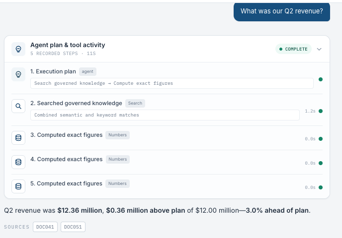
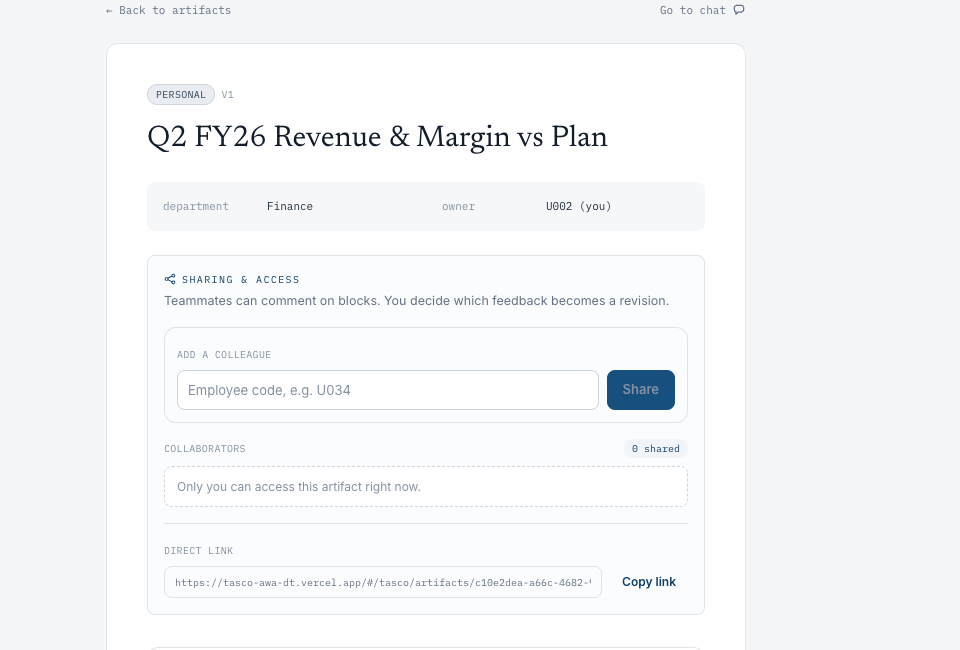
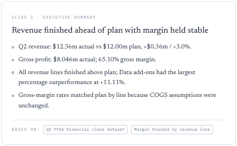
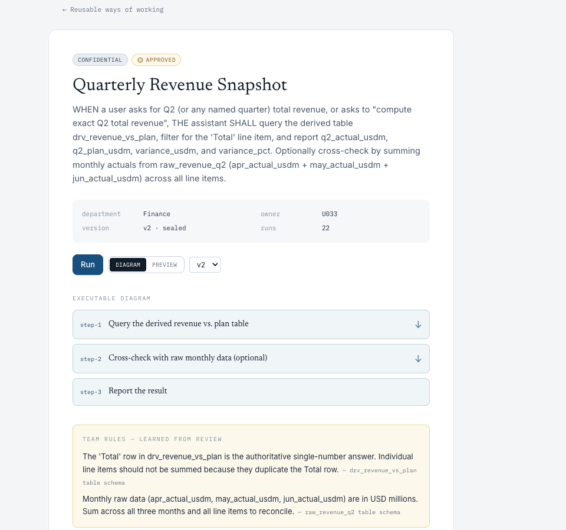

AWA
Enterprise Knowledge
The cost of one question
“What was our Q2 revenue?”
A question took three days. It could take ten minutes.
AWA removes all three.The evidence comes with the answer, and the method stays with the team.
AWA Team | Enterprise KnowledgeDan | Presenter
AWA
Adoption without friction
Every query — simple to complex — moves from days to minutes.
Answer in seconds
Report ready in minutes, double-checked with sources
Re-usable step-by-step recipe, improve over time
Any questionDays → minutes → secondsOne workspace to adopt, scale, and reuse
AWA Team | Enterprise KnowledgeDan | Presenter
AWA
How the work moves
What AWA offers
Three product pillars
Three product pillars, shown next in the working product.
Sources and steps stay with every answer.
Nothing to check by handEach person sees only approved material — without waiting on access.
Safe by defaultTeams can review, rerun, and improve what works.
Collaboration that lastsNext: each pillar in the working product.Grounded answer, safe boundary, reusable intelligence.
AWA Team | Enterprise KnowledgeOrientation | Three moments
AWA
Moment 01 | A grounded answer
The everyday question
Grounded answer, verifiable.
Simply ask, get grounded answer. Accurate, traceable with sources and steps.
$12.36mcomputed, not guessed
+3.0%comparison already made
DOC041 + DOC051evidence you can open

AWA Team | Enterprise KnowledgeWorking product | Finance U002 | Demo corpus
AWA
Moment 02 | The right answer per person
No more asking permission — access resolves in seconds.
“What was our Q2 revenue?”
Finance ManagerTrần Thị Bình | U002
ANSWERED
$12.36m3.0% ahead2 sources
Product ManagerLê Hoàng Vy | U034
NOT FOUND
0 finance figures0 finance sources1 product source
Relevant evidence must exist inside your perimeter.No financial source found. AWA does not invent a figure.
AWA Team | Enterprise KnowledgeSame deployment | Same question | Two identities
AWA
Moment 01 | The answer becomes work
Where the answer usually gets lost
Work gets done in one place. No more juggling three apps.
Narrative, figures, sources, and sharing controls, where the question was asked.
StructuredBusiness blocks, not a prose dump
CitedEvidence travels with the output
Owner-gatedColleagues comment, the owner decides
No more rebuilding the result in another tool.


AWA Team | Enterprise KnowledgeWorking product | Q2 FY26 Revenue and Margin
AWA
Moment 03 | A method the team keeps

What one person works out, the team keeps
The team keeps what works.
AWA keeps the procedure, the review corrections, and every run. The next person starts ahead.
APPROVEDA named owner signed it off
v2 sealedImproved after review, not silently edited
22 runsPeople came back to it
Parameterized runs pause for explicit confirmation.
AWA Team | Enterprise KnowledgeWorking product | Quarterly Revenue Snapshot
AWA
Why AWA
Adoption starts with one useful answer
One answer people trust becomes a team habit.
When evidence, access, and the method stay together, people come back.
01Easy to startAsk in plain language. Get a grounded answer.
02Safe to shareEvidence and access stay attached.
03Worth repeatingThe team reuses and improves what works.
AWADan | Mark | Sarthak
One useful answer becomes a habit. A habit becomes a team workflow.
AWA Team | Enterprise KnowledgeThank you | Q&A
AWA
Team roster
The team behind AWA
Experienced team
Finance professor, FT top-30 business school. AI/ML builder across Mastercard, UK government, and investment firms.
Venture-funded founder and investor. UNICEF grant winner. Builds production AI systems.
AI architect, a decade of software and Fortune 500 delivery. Leads voice-AI at Doppel.
AWAAWA turns everyday questions into trusted work.
AWA Team | Enterprise KnowledgeTeam roster
AWA
The governed AI workspace
Evolving centralized brainfor enterprises
Accuracy+Traceability+Zero friction
=Productivity+Adoption
AWA turns everyday questions into trusted, reusable work.
AWA Team | Enterprise KnowledgeQ&A
AWA
Part two | Enterprise knowledge
B1 | The operating problem
The knowledge exists. Enterprises cannot reliably find, move, or keep it.
Knowledge cannot be found.
People ask people. Answer quality depends on who happened to reply.
Hierarchy turns a question into a queue.
The longer the governance chain, the more of the work is waiting.
Operating knowledge leaves.
The methods that make each entity work live in individuals.
AWA Team | Enterprise KnowledgeB1 | Find · move · keep
AWA
Section two | Why this year
B2 | Three pressures, one record
Growth created the operating case. Regulation set the clock.
Audited at 31 Dec 2025.
Board of Management in 2025.
In force during Jan–Jul 2026.
The same work recordMethod · evidence · entitlement
AWA Team | Enterprise KnowledgeB2 | Why now
AWA
Section two | A regional category
B3 | One enterprise is first, not alone
The same enterprise pressure repeats across Southeast Asia.
Large, regulated, document-heavy organisations need the same three things: permissions, proof, and reusable operating knowledge.
ConglomeratesFinancial servicesInsuranceMulti-entity retail
AWA Team | Enterprise KnowledgeB3 | Regional demand
AWA
Section two | Beyond chat and search
B4 | The landscape
Chat answers. Search finds. AWA turns governed answers into reusable work.
Answer well
Fast, fluent help. The work usually ends in the conversation.
ChatGPT EnterpriseGemini for Workspace
Find and cite
Strong retrieval and connectors. They inherit the source system and its operating model.
Microsoft 365 CopilotGlean
Prove, collaborate, repeat
Page-level locator to supporting evidenceArtifact comments, suggestions, and versionsFlow review and reuse against current sources
Not another chatbot plus search engine: the answer becomes governed organisational work.
AWA Team | Enterprise KnowledgeB4 | Product landscape
AWA
Section two | A decision, not an engagement
B5 | How the pilot starts
The smallest thing that produces a real decision.
Not a group-wide rollout.
No production connection, customer data, or write-back.
Commercial terms only if the pilot expands.
Measure against real prior work.
Before launchChoose workflow, owner, and boundary.
→Two-week pilotRun roughly two complete cycles.
→Final-day decisionExpand, revise, or stop.
Route each decision to its natural owner:General Director’s office sponsors · operating owner owns workflow · data owner approves boundary · A strategic stakeholder discusses the investment case separately.
AWA Team | Enterprise KnowledgeB5 | Pilot
AWA
Section two | The next decision
B6 | One relationship, not two
Be our first design partner, and own part of what you help build.
Put a pilot-scoping meeting in the diary.
One hour with the person who would own the workflow. This is the only decision needed today.
Name one pilot owner and one workflow.
Two weeks later we start; two weeks after that, you decide.
Open a separate strategic working session.
Discuss a pre-seed strategic stake there — not today and not in this room.
Terms are not on this slide.The round is forming. Amount, instrument, and valuation belong in a later working session with the data room.
AWA Team | Enterprise KnowledgeB6 | The ask
1 / 16